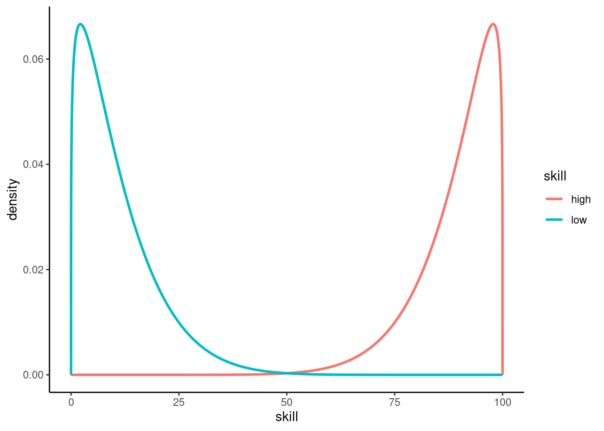
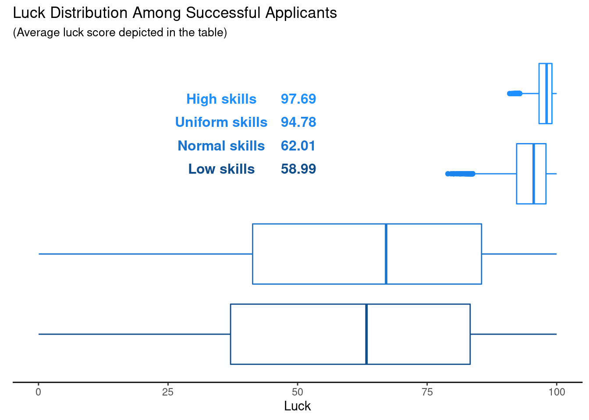
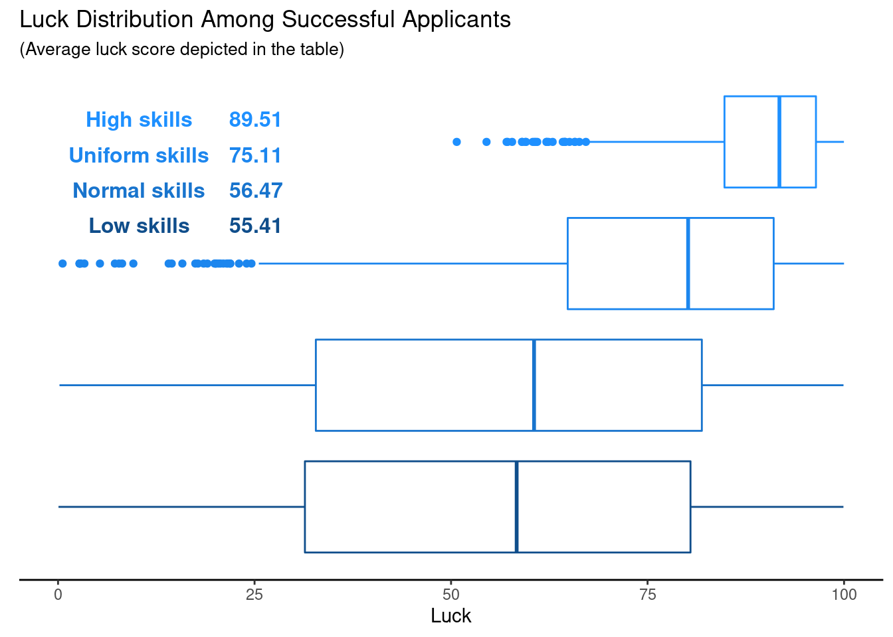
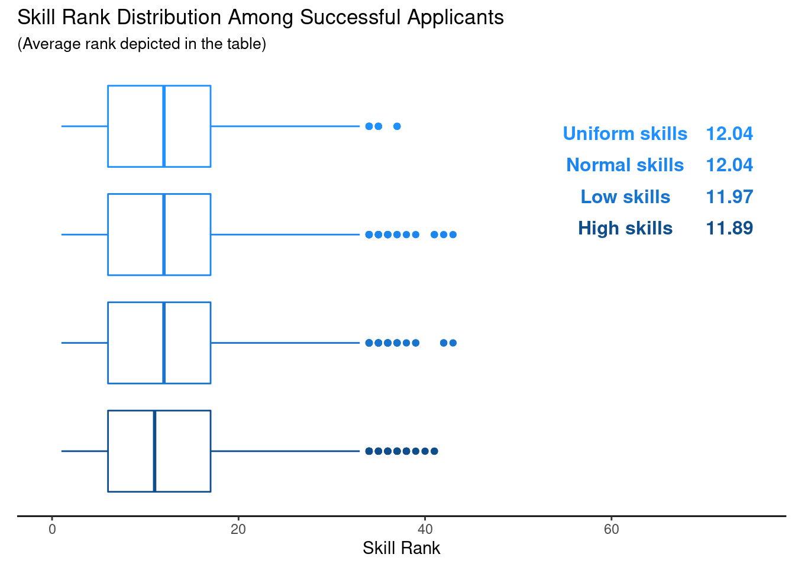
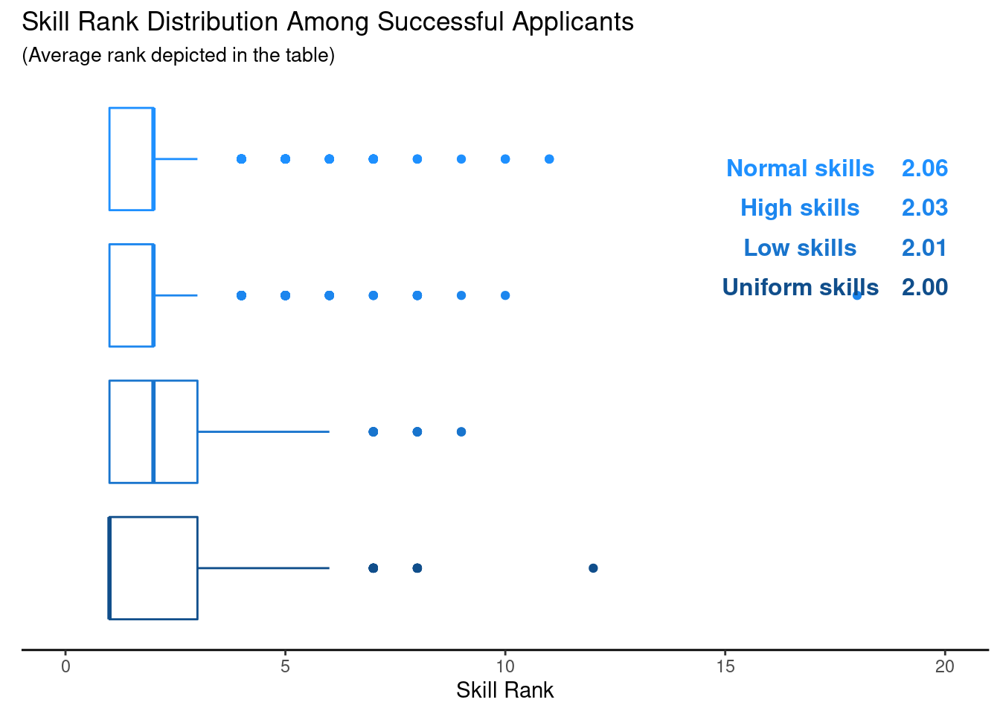

Is Success Luck or Hard Work?
Recently, I decided to try out a few stretches in an effort to stay in shape during long stretches of working from home and not leaving the house. Also, to distract me from my inflexible body I thought I would watch a video on YouTube simultaneously and as luck would have it, I saw an interesting video on Veritasium’s YouTube Channel called “Is Success Luck or Hard Work”. Personally, I agree with a lot of things being said in that video and I recommend that you check out the video if you want to get a perspective on the role of luck compared to skill (or keep on reading for my own take on this topic).
But more importantly, in the video Derek Muller - the guy behind Veritasium - describes a simulation he ran in order to hint at whether luck played a role in the selection of 11 out of 18300 applicants in 2017 for the NASA astronaut training program. The underlying model that is simulated in the video is described as assuming that astronauts are selected mostly based on their skill. However, 5% of the decision is also based on luck.
This sounds a little bit vague, so Muller elaborates: First, each applicant is assigned a random skill score (out of 100) and a luck score (out of 100). Then, the weighted sum of the two scores result in an applicant’s overall score (the weights being of course 95% for skill and 5% for luck). Finally, the top 11 applicants according to this overall score will then go on to become astronauts.
Now, based on a thousand runs of this simulation what Veritasium finds is that it was the very lucky applicants who were selected. More precisely, the average luck score of the picked applicants was 94.7. Similarly, on average out of the 11 picked astronauts only 1.6 applicants would have been the same had the selection process been based on skill alone.
So, as I was watching this video, I noticed two things. One, I am really inflexible and I need to stretch more and two, this simulation sounds pretty cool and I bet I could recreate this simulation quite easily. Thus, an idea for a new blog post was born.
The Original Approach
Later on, I want to tweak the above approach a bit but for now let us simulate the process as described above. First, we will need a function to generate the applicants’ scores. Here, I want to generate the luck score according to a uniform distribution on \((0, 100)\) because I assume that we are all lucky in a similar way regardless of what the position we apply for is.
However, I think it is conceivable that for highly specialized jobs (such as astronauts) only really skilled applicants show up whereas jobs that fall more in the “jack of all trades” category may attract applicants from all kinds of skill ranges. This will, of course, affect the distribution of skill scores and I wonder if this has a significant effect on the overall results. Therefore, I will make sure that the score generating function has the ability to use different skill distributions. Finally, let us add an option to change the skill-luck ration which we will first set to its default value of 5%.1
library(tidyverse)
simulate_applicants <- function(n, dist, luck_ratio = 0.05) {
tibble(
skill = dist(n),
luck = runif(n, min = 0, max = 100),
overall = (1 - luck_ratio) * skill + luck_ratio * luck
)
}
set.seed(123)
simulate_applicants(5, function(x) rnorm(x, 50, 1))# A tibble: 5 × 3
skill luck overall
<dbl> <dbl> <dbl>
1 49.4 95.7 51.8
2 49.8 45.3 49.5
3 51.6 67.8 52.4
4 50.1 57.3 50.4
5 50.1 10.3 48.1Obviously, each column represents the respective score for each applicant. Regarding the skill scores I propose a couple of different distributions:
- Uniform distribution: We assume that applicants come from all kinds of skill ranges and all skill levels are equally likely.
- Normal distribution: We assume that most people fall within a medium skill range which we model by a normal distribution with mean 50 and standard deviation \(50/4\) so that for our 18000 astronauts chances are very slim that one of them falls outside the range (due to the empirical rule of the normal distribution).
- High specialization: To cover the scenario of only highly skilled applicants, let us use a beta distribution \(X \sim \text{Beta}(1.2, 10)\) and use the transformed variable \(100(1-X)\) as skill distribution.2
- Low Specialization: Similarly, let us use \(100X\) where \(X \sim \text{Beta}(1.2, 10)\) to simulate a scenario in which mostly applicants with a low skill score occur.
The corresponding functions that realize the distributions for us are given as follows:
normal_skills <- function(n) {
rnorm(n, mean = 50, sd = 50 / 4) %>%
# Make sure that score stays in bounds
pmax(0) %>%
pmin(100)
}
uniform_skills <- function(n) {
runif(n, min = 0, max = 100)
}
high_skills <- function(n) {
100 * (1 - rbeta(n, 1.2, 10))
}
low_skills <- function(n) {
100 * rbeta(n, 1.2, 10)
}To illustrate the high and low skill distribution, let us take a look at the densities of the beta distributions in question.

Now, let us write a function that runs a single iteration of the selection process and marks applicants as either selected or not. We will denote the number of applicants to be picked via m. In our astronaut example it holds that \(m = 11\).
pick_applicants <- function(n, dist, m = 11) {
applicants <- simulate_applicants(n, dist)
applicants %>%
arrange(desc(overall)) %>%
mutate(selected = c(rep('yes', m), rep('no', n - m)))
}
n <- 18300
pick_applicants(n, normal_skills)# A tibble: 18,300 × 4
skill luck overall selected
<dbl> <dbl> <dbl> <chr>
1 98.1 11.3 93.8 yes
2 97.4 5.56 92.8 yes
3 93.1 72.9 92.1 yes
4 93.2 60.5 91.6 yes
5 90.5 94.4 90.7 yes
6 94.3 15.4 90.4 yes
7 89.1 88.6 89.1 yes
8 89.4 76.1 88.7 yes
9 87.7 83.8 87.5 yes
10 88.0 75.2 87.3 yes
# … with 18,290 more rows
# ℹ Use `print(n = ...)` to see more rowsUsing this function, we can easily simulate the whole application process a couple of times Monte Carlo style.
set.seed(123)
N <- 1000
simus <- expand_grid(
dist = c("uniform_skills", "normal_skills", "low_skills", "high_skills"),
simuID = 1:N
) %>%
mutate(applicants = map(dist, ~pick_applicants(n, get(.)))) %>%
unnest(applicants) %>%
filter(selected == 'yes')Having created a tibble simus that contains information on the skill and luck scores of success candidates for each simulation run, we can visualize the distribution of the luck scores of the successful candidates using boxplots. The idea behind that is that if luck is important, then the boxplots should differ from that of a standard uniform distribution on \((0, 100)\).
library(grid)
library(gridExtra)
library(gtable)
avgs <- simus %>%
group_by(dist) %>%
summarize(avg_luck = mean(luck)) %>%
arrange(desc(avg_luck)) %>%
mutate(
avg_luck = scales::comma(avg_luck, accuracy = .01),
dist = case_when(
dist == "high_skills" ~ "High skills",
dist == "low_skills" ~ "Low skills",
dist == "uniform_skills" ~ "Uniform skills",
dist == "normal_skills" ~ "Normal skills"
)
)
colorScale <- glue::glue("dodgerblue{1:4}")
avgTable <- tableGrob(
avgs,
rows = NULL,
cols = NULL,
theme = ttheme_minimal(
core=list(fg_params = list(col = colorScale, fontface = 2))
)
)
simus %>%
mutate(dist = fct_reorder(dist, luck)) %>%
ggplot(aes(y = dist, x = luck, col = dist)) +
geom_boxplot(show.legend = F) +
theme_classic() +
labs(
x = "Luck",
y = element_blank(),
title = "Luck Distribution Among Successful Applicants",
subtitle = "(Average luck score depicted in the table)"
) +
annotation_custom(avgTable, xmin = 20, xmax = 60, ymin = 2, ymax = 5) +
scale_y_discrete(breaks = NULL) +
scale_color_manual(values = rev(colorScale)) +
theme(axis.line.y = element_blank(),
plot.subtitle = element_text(size = 10)) 
Here, we added a table of the average luck score of the successful applicants to the boxplots that summarize the distribution of their luck scores. As it turns out, we can clearly see differences between the luck distribution of the successful candidates across the different skill distributions. Interestingly, the uniform skill distribution comes quite close to the average value Veritasium finds in his video, so I guess we can assume that he probably used that skill distribution.
I would say that the key takeaway of this picture is that the more specialized your area of expertise is, the luckier you have to be if you have many similarly skilled competitors. In a way, this makes sense. If you and your competition is basically at the top of the game and there is not much room to differentiate candidates w.r.t. skill, then luck may just be the deciding factor.
Interestingly, the same holds true when skills are uniformly distributed among the whole range. Further, when the skill distribution of you and your competition looks more normally distributed or if the skill scores of all applicants are rather low, then you do not need to be extremely lucky (at least not as much as before). But still, you have to be more lucky than the average applicant (recall that luck is modeled via a uniform distribution here with mean 50).
So, in a sense this might mean that if chances are good that there are a couple of applicants who are as good as it gets, i.e. at the maximum of the skill range (which is the case for the high and uniform skills), then the successful candidates are indeed really lucky. Similarly, if chances are low that some applicants are the best of the best (normal and low skills), then successful applicants are luckier than the average Joe but in a less extreme way than in the previous example. In total, it looks like luck plays a role in either case.
Finally, to break this scenario down to something more realistic with a higher available spots to applicants ratio I ran the same simulation but with only one available position and 100 applications.3 The results look similar but as expected if their are less applicants for one position, then luck plays a lesser but still important role.

Overcoming Threshold Approach
There is this old joke where a recruiter in an HR department gets a large stack of applications for a specific position within the company. The recruiter immediately begins to work on the applications by simply taking half of the applications and throwing them into the trash because he “does not hire unlucky people”.
This may be an extreme action but then again I have heard that some companies immediately reject an application if they see only a single typo in the documents. To me, this is similar to what the recruiter from the joke is doing because a typo can happen by accident to even the most careful person regardless of their skill. So, let us use this as a way to construct another hypothetical scenario.
In this scenario, an application goes through two stages. In the first stage, the application is either is moved to the second stage or is rejected due to some arbitrary small reason. By this we mean some small event based on luck which we will model here with our luck score from above. In the second stage, everything is judged purely on skill alone, i.e. the person with the highest skill score gets the job.
Let us write a new function for this second hypothetical scenario. Notice that this new function ranks applicants according to their skill score, i.e. the most skilled applicant is ranked as 1, the second most skilled applicant is ranked as 2 and so on.
pick_applicants2 <- function(n, dist, m = 11, luck_thresh = 50) {
applicants <- simulate_applicants(n, dist)
applicants <- applicants %>%
mutate(skill_rank = min_rank(desc(skill))) %>%
filter(luck > luck_thresh)
applicants %>%
arrange(desc(skill)) %>%
mutate(selected = c(rep('yes', m), rep('no', nrow(applicants) - m)))
}
pick_applicants2(n, high_skills)# A tibble: 49 × 5
skill luck overall skill_rank selected
<dbl> <dbl> <dbl> <int> <chr>
1 99.9 87.4 99.3 1 yes
2 99.1 54.6 96.9 3 yes
3 98.8 54.5 96.6 5 yes
4 98.8 97.5 98.7 6 yes
5 98.2 90.6 97.8 10 yes
6 97.6 60.8 95.8 12 yes
7 97.0 87.0 96.5 13 yes
8 96.8 71.9 95.5 14 yes
9 96.7 97.0 96.8 16 yes
10 96.6 55.1 94.5 18 yes
# … with 39 more rows
# ℹ Use `print(n = ...)` to see more rowsAfterwards, we can run a similar simulation as before. However, this time we will take a look at the distribution of the ranks of the successful candidates. Here are the results for our astronaut scenario, i.e. 18300 applicants with 11 open positions.

As you can see, the distribution of the skill ranks of the successful applicants do not vary much across the skill distributions. Also, it looks like the average ranks are simply the amount of positions plus 1. This is somewhat unsurprising since we throw out 50% of the applicants randomly in the first stage of the process.
Nevertheless, this reinforces the idea that not necessarily the most skilled person gets hired to do the job. What is even more surprising to me is the fact that in the current scenario there is still a chance of around 8% that a successful applicant has a skill rank above 22 (recall that there are 11 open positions). Now, running the same analysis for 100 applicants for 1 job again yields similar results.

In these 1000 simulations, the chances that a successful applicant has a skill score of 5 or above are similarly high but depend on the skill distribution.
# A tibble: 4 × 3
# Groups: dist [4]
dist n prop
<chr> <int> <chr>
1 Normal skills 82 8.2%
2 Uniform skills 69 6.9%
3 High skills 65 6.5%
4 Low skills 58 5.8% Summary
So, in our simulations we have seen that luck plays a role in whether an applicant gets a job. Further, this actually depended on the skill distribution of the applicants and the impact of luck was most strongly pronounced in the cases when there was a good chance that highly skilled people are present among the applicants. Probably, this is the most relevant scenario anyway since we all like to believe that we are skilled but are still somewhat more proficient than other skilled people.
Of course, in terms of real world implications, this simulation can only give anecdotal evidence towards the hypothesis that luck plays a large role in success. Also, we made a lot of assumptions in our simulations that might be debatable. But, personally, I like to believe that luck cannot be neglected in the end and even the most skilled person may want to be grateful when he gets accepted for a job. If you wish to share your opinion on that, feel free to leave a comment. Finally, if you thought this post was interesting, I would also appreciate it if you clicked the applause button (just so that it feels less like I am talking into a void).
Footnotes
When I first started to write this blog post, I wanted to investigate how results change for different ratios but this post is already long enough. Thus, I decided to simply leave that functionality unused but someone interested in recreating parts of this simulation may tweak that parameter.↩︎
Here, the parameters of the beta distribution were picked so that the densities somewhat fit the desired description as will be seen in the plot a few lines ahead. Of course, one could potentially change the parameters but here I decided to go with this.↩︎
I tried to research what is a realistic number of applicants for a given positions but results were varying and I found claims of less than 100 applicants on average and way more than 100 applicants. So, here I decided to go with something in between.↩︎